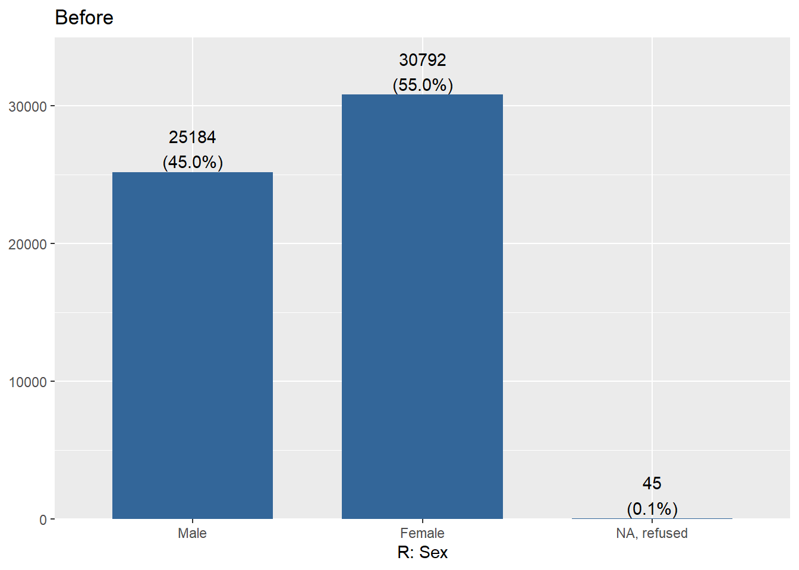
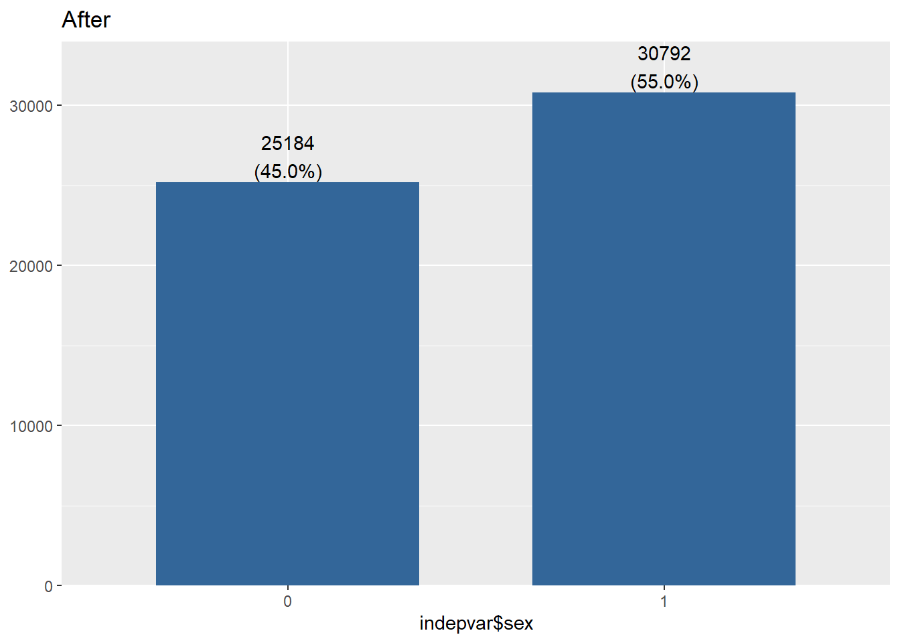
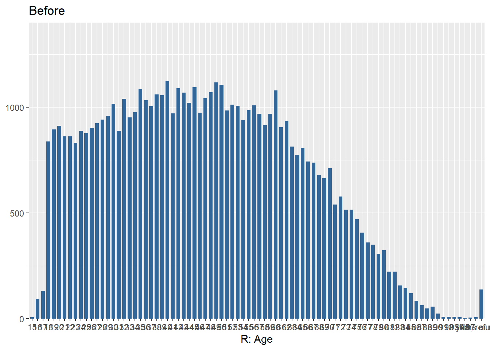
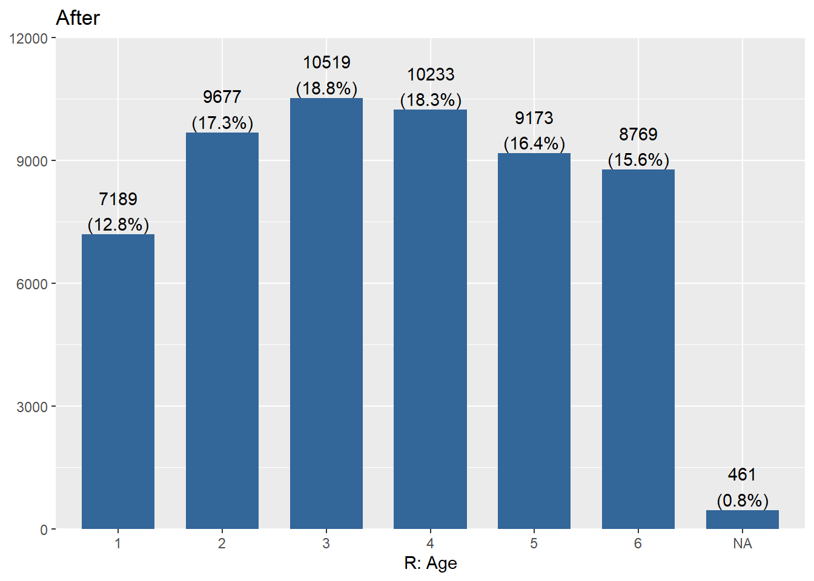
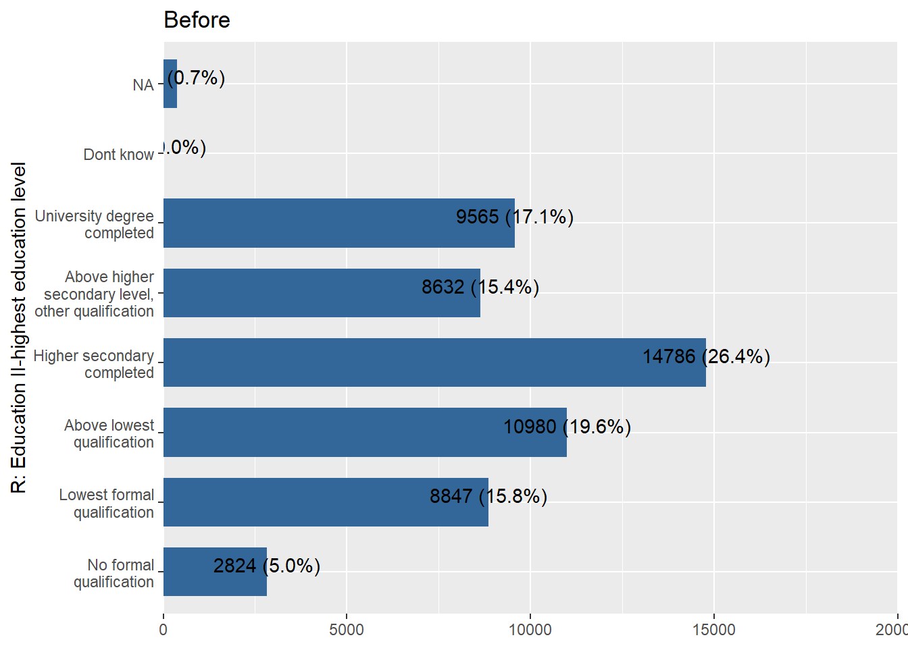
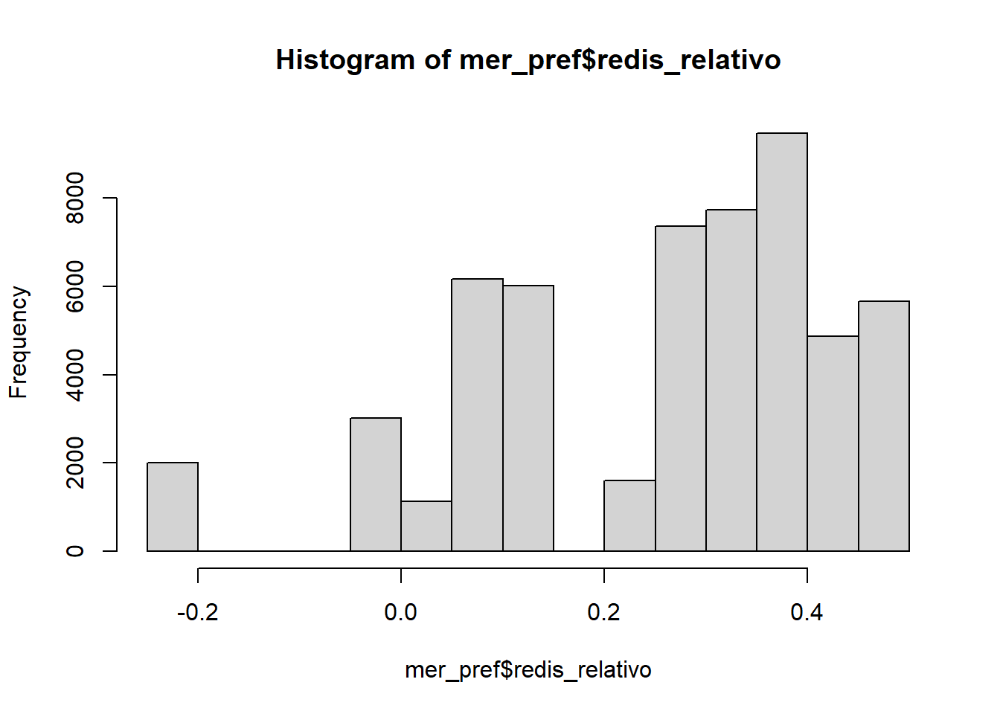

Data preparation
jueves 04 junio 2020 2:38:32
load packages
library(sjPlot)
library(sjmisc) # several functions,ej read_stata
library(descr)
library(memisc) # codebook
library(psych) # cor2latex
library(corrplot) # graph correlations
library(lavaan)
library(stargazer)
library(semTools)
library(plyr) # count
library(dplyr)
#library(car) # recode
library(ggplot2)
#library(Hmisc)
library(tidyverse)
library(data.table)
library(stringr)
library(countrycode)
library(lme4)
library(texreg)
library(mice)
library(ggrepel) # for scatter labels in sjp.scatter
#library(semPlot)
library(haven)
library(sjlabelled)
library(kableExtra)
library(summarytools)
#library(Hmisc)1 Open data and General setting
issp2009=read_stata("input/data/original/ZA5400_v4-0-0.dta")
# Check data
#names(issp2009)names(issp2009) <- tolower(names(issp2009)) # change to small1.1 Check & generate IDs (v4: respondent, v5: country)
# Generate new sequential id individuals by country to merge
issp2009$id <- sequence(tabulate(issp2009
$v5))
issp2009$idtem=issp2009$v5*10000
issp2009$id=issp2009$idtem + issp2009$id2 Measurement Merit & Getting ahead
Note: object now generated from different script (merit_per_pref.R; merit_per_pref.rda)
2.1 Measurement and Redistribution
2.2 Data preparation, gen redistrib.rda
| Code | New Code | Variable |
|---|---|---|
| v33 | income_dif | Gov. resp to reduce differences in income |
| v34 | unemployed | Gov. resp to provide decent s andard of living for unemployed |
| v36 | taxes | People with high income should pay a larger / same smaller share of income in taxes than those with low income |
| v38 | health | ok if people with high income can buy better health |
| v39 | educ | ok if people with high income can buy better education |
2.2.1 Rename & define object
# select
redistrib=issp2009[,c("v5","v33","v34","v36","v38","v39","id")]
# new names(issp2009)
redistrib$income_dif= redistrib$v33
redistrib$unemployed= redistrib$v34
redistrib$taxes = redistrib$v36
redistrib$health = redistrib$v38
redistrib$educ = redistrib$v39
#Delete old variables
redistrib=redistrib[-c(2:6)]
stargazer(redistrib[-c(1,2)], type="html") | Statistic | N | Mean | St. Dev. | Min | Pctl(25) | Pctl(75) | Max |
| income_dif | 56,021 | 2.300 | 1.500 | 1 | 1 | 3 | 9 |
| unemployed | 56,021 | 2.200 | 1.400 | 1 | 1 | 3 | 9 |
| taxes | 56,021 | 2.300 | 1.500 | 1 | 1 | 3 | 9 |
| health | 56,021 | 3.700 | 1.500 | 1 | 3 | 5 | 9 |
| educ | 56,021 | 3.600 | 1.500 | 1 | 2 | 5 | 9 |
2.2.2 Recode NAs
redistrib[3:7][redistrib[3:7] > 5] <- NA
stargazer(redistrib[-c(1,2)], type="html") | Statistic | N | Mean | St. Dev. | Min | Pctl(25) | Pctl(75) | Max |
| income_dif | 54,400 | 2.100 | 1.100 | 1.000 | 1.000 | 3.000 | 5.000 |
| unemployed | 54,698 | 2.100 | 0.990 | 1.000 | 1.000 | 3.000 | 5.000 |
| taxes | 53,258 | 2.000 | 0.780 | 1.000 | 1.000 | 2.000 | 5.000 |
| health | 54,237 | 3.500 | 1.300 | 1.000 | 2.000 | 5.000 | 5.000 |
| educ | 54,220 | 3.500 | 1.300 | 1.000 | 2.000 | 5.000 | 5.000 |
2.2.3 adjust labels NAs
get_labels(redistrib$income_dif)
redestrib <-sjlabelled::set_na(redistrib[,c("income_dif","unemployed", "taxes", "health", "educ")], na = c(8,9)) ## [1] "Strongly agree" "Agree" "Neither agree nor disagree"
## [4] "Disagree" "Strongly disagree" "Cant choose"
## [7] "NA"2.2.4 Aggregated data x
# Dataset with original code for sjp.likert graph
redistrib2=redistrib
# Reverse code for SEM models
redistrib[3:7]=6-redistrib[3:7]
# Checks
redistrib_agg <- aggregate(redistrib, by=list(redistrib$v5), FUN=mean,na.rm=TRUE)
# En analisis me falta esta base de datos, no estoy seguro de como debe guardarse.
# Save object
# save(redistrib, file="input/data/proc/redistrib.rda")2.2.5 General Check “redistrib.rda”
print(dfSummary(redistrib_agg, valid.col = FALSE, graph.magnif = 1),
max.tbl.height = 300, method = "render")Data Frame Summary
Dimensions: 41 x 8Duplicates: 0
| No | Variable | Stats / Values | Freqs (% of Valid) | Graph | Missing |
|---|---|---|---|---|---|
| 1 | Group.1 [numeric] | Mean (sd) : 433 (264.3) min < med < max: 32 < 392 < 862 IQR (CV) : 500 (0.6) | 41 distinct values |  |
0 (0%) |
| 2 | v5 [numeric] | Mean (sd) : 433 (264.3) min < med < max: 32 < 392 < 862 IQR (CV) : 500 (0.6) | 41 distinct values | |
0 (0%) |
| 3 | id [numeric] | Mean (sd) : 4330439.8 (2643188.3) min < med < max: 320567 < 3920648.5 < 8620485 IQR (CV) : 4999977 (0.6) | 41 distinct values |  |
0 (0%) |
| 4 | income_dif [numeric] | Mean (sd) : 3.9 (0.4) min < med < max: 2.7 < 3.9 < 4.5 IQR (CV) : 0.6 (0.1) | 41 distinct values |  |
0 (0%) |
| 5 | unemployed [numeric] | Mean (sd) : 3.9 (0.3) min < med < max: 3.2 < 3.9 < 4.5 IQR (CV) : 0.3 (0.1) | 41 distinct values |  |
0 (0%) |
| 6 | taxes [numeric] | Mean (sd) : 4 (0.2) min < med < max: 3.7 < 4 < 4.4 IQR (CV) : 0.3 (0.1) | 41 distinct values |  |
0 (0%) |
| 7 | health [numeric] | Mean (sd) : 2.4 (0.5) min < med < max: 1.6 < 2.3 < 3.7 IQR (CV) : 0.6 (0.2) | 41 distinct values |  |
0 (0%) |
| 8 | educ [numeric] | Mean (sd) : 2.4 (0.5) min < med < max: 1.6 < 2.3 < 3.8 IQR (CV) : 0.6 (0.2) | 41 distinct values |  |
0 (0%) |
Generated by summarytools 0.9.6 (R version 4.0.0)
2020-06-04
#############################################
# Ver donde va este codigo. (agregar a prodcution)
###################################################################################################################### 2.5 Invariance
# measurementInvariance(cfa_2, data = redistrib.agg, group = "v5") # No funciono la invarianza arreglar.End sec 2; saved objects # redistrib.rda: clean & recoded # redistrib_sco.rda : fac scores [por ahora en analysis] # propuesta redistrib.agg
3 Preparation Individual & Macro variables.
3.1 Individual level variables
indepvar=issp2009
#length(indepvar$id)3.1.1 Recode sex
# Sex
sjPlot::plot_frq(indepvar$sex, title ="Before")
indepvar$sex=ifelse(indepvar$sex==1,0,ifelse(indepvar$sex==2,1,NA))
sjPlot::plot_frq(indepvar$sex, title ="After")
3.1.2 Recode Age
label<- c("")
label<- "1"
# Age
sjPlot::plot_frq(indepvar$age, title = "Before",show.mean = T , show.values = F,show.n = F, axis.labels =)
#which(indepvar$age > 85) # / 461 casos !
#which(indepvar$age < 15) # / 0 casos !
indepvar$age[indepvar$age > 85] = NA
# Categorical age
indepvar$age_c=indepvar$age
indepvar$age_c[indepvar$age_c <= 25] = 1
indepvar$age_c[indepvar$age_c > 25 & indepvar$age_c <=35] = 2
indepvar$age_c[indepvar$age_c > 35 & indepvar$age_c <=45] = 3
indepvar$age_c[indepvar$age_c > 45 & indepvar$age_c <=55] = 4
indepvar$age_c[indepvar$age_c > 55 & indepvar$age_c <=65] = 5
indepvar$age_c[indepvar$age_c > 65] = 6
sjPlot::plot_frq(indepvar$age_c, title = "After", show.na = T)
3.1.3 Recode Education
sjPlot::plot_frq(indepvar$degree, coord.flip = TRUE, title = "Before")
# Recode. Values over 5 are removed
indepvar$degree[indepvar$degree > 5]=NA3.1.3.1 Dummy university
# Dummy university
indepvar$univ=indepvar$degree
indepvar$univ=ifelse(indepvar$univ<=4,0,
ifelse(indepvar$univ==5,1,NA))
sjPlot::plot_frq(indepvar$univ, coord.flip = TRUE, title = "Dummy university")
3.1.4 Recode Income
stargazer(indepvar[182:222], type="html")| Statistic | N | Mean | St. Dev. | Min | Pctl(25) | Pctl(75) | Max |
| ar_inc | 56,021 | 984,245.000 | 124,279.000 | 0 | 999,990 | 999,990 | 999,997 |
| at_inc | 56,021 | 986,881.000 | 113,617.000 | 0 | 999,990 | 999,990 | 999,999 |
| au_inc | 56,021 | 977,568.000 | 143,500.000 | 0 | 999,990 | 999,990 | 999,999 |
| be_inc | 56,021 | 982,029.000 | 132,621.000 | 250 | 999,990 | 999,990 | 999,998 |
| bg_inc | 56,021 | 988,379.000 | 107,081.000 | 0 | 999,990 | 999,990 | 999,999 |
| ch_inc | 56,021 | 984,516.000 | 122,992.000 | 0 | 999,990 | 999,990 | 999,998 |
| cl_inc | 56,021 | 9,797,284.000 | 1,380,510.000 | 20,000 | 9,999,990 | 9,999,990 | 9,999,999 |
| cn_inc | 56,021 | 9,492,815.000 | 2,190,718.000 | 0 | 9,999,990 | 9,999,990 | 9,999,998 |
| cy_inc | 56,021 | 983,342.000 | 127,852.000 | 0 | 999,990 | 999,990 | 999,998 |
| cz_inc | 56,021 | 984,906.000 | 120,190.000 | 2,500 | 999,990 | 999,990 | 999,999 |
| de_inc | 56,021 | 979,209.000 | 142,476.000 | 0 | 999,990 | 999,990 | 999,999 |
| dk_inc | 56,021 | 9,758,927.000 | 1,493,889.000 | 70,000 | 9,999,990 | 9,999,990 | 9,999,999 |
| ee_inc | 56,021 | 984,775.000 | 121,646.000 | 0 | 999,990 | 999,990 | 999,998 |
| es_inc | 56,021 | 987,281.000 | 111,934.000 | 250 | 999,990 | 999,990 | 999,999 |
| fi_inc | 56,021 | 986,348.000 | 115,715.000 | 0 | 999,990 | 999,990 | 999,999 |
| fr_inc | 56,021 | 953,630.000 | 209,931.000 | 250 | 999,990 | 999,990 | 999,999 |
| gb_inc | 56,021 | 985,372.000 | 118,361.000 | 2,000 | 999,990 | 999,990 | 999,998 |
| hr_inc | 56,021 | 985,900.000 | 117,437.000 | 280 | 999,990 | 999,990 | 999,999 |
| hu_inc | 56,021 | 9,852,941.000 | 1,192,659.000 | 0 | 9,999,990 | 9,999,990 | 9,999,999 |
| il_inc | 56,021 | 984,167.000 | 124,258.000 | 0 | 999,990 | 999,990 | 999,999 |
| is_inc | 56,021 | 9,856,318.000 | 1,154,729.000 | 50,000 | 9,999,990 | 9,999,990 | 9,999,997 |
| it_inc | 56,021 | 982,893.000 | 129,483.000 | 400 | 999,990 | 999,990 | 999,998 |
| jp_inc | 56,021 | 98,036,021.000 | 13,460,874.000 | 1,000,000 | 99,999,990 | 99,999,990 | 99,999,999 |
| kr_inc | 56,021 | 97,340,038.000 | 15,774,210.000 | 0 | 99,999,990 | 99,999,990 | 99,999,998 |
| lt_inc | 56,021 | 986,784.000 | 114,061.000 | 0 | 999,990 | 999,990 | 999,999 |
| lv_inc | 56,021 | 986,805.000 | 114,036.000 | 0 | 999,990 | 999,990 | 999,998 |
| no_inc | 56,021 | 97,913,429.000 | 14,225,305.000 | 0 | 99,999,990 | 99,999,990 | 99,999,999 |
| nz_inc | 56,021 | 985,391.000 | 115,653.000 | 7,500 | 999,990 | 999,990 | 999,999 |
| ph_inc | 56,021 | 979,401.000 | 141,241.000 | 500 | 999,990 | 999,990 | 999,998 |
| pl_inc | 56,021 | 979,830.000 | 140,318.000 | 0 | 999,990 | 999,990 | 999,999 |
| pt_inc | 56,021 | 989,809.000 | 100,328.000 | 175 | 999,990 | 999,990 | 999,998 |
| ru_inc | 56,021 | 977,961.000 | 145,368.000 | 1,500 | 999,990 | 999,990 | 999,999 |
| se_inc | 56,021 | 982,544.000 | 128,212.000 | 0 | 999,990 | 999,990 | 999,999 |
| si_inc | 56,021 | 988,658.000 | 105,748.000 | 0 | 999,990 | 999,990 | 999,999 |
| sk_inc | 56,021 | 982,834.000 | 129,794.000 | 75 | 999,990 | 999,990 | 999,999 |
| tr_inc | 56,021 | 977,313.000 | 148,777.000 | 0 | 999,990 | 999,990 | 999,999 |
| tw_inc | 56,021 | 9,662,455.000 | 1,799,088.000 | 0 | 9,999,990 | 9,999,990 | 9,999,998 |
| ua_inc | 56,021 | 976,017.000 | 152,790.000 | 0 | 999,990 | 999,990 | 999,999 |
| us_inc | 56,021 | 975,711.000 | 149,426.000 | 500 | 999,990 | 999,990 | 999,998 |
| ve_inc | 56,021 | 984,900.000 | 121,649.000 | 300 | 999,990 | 999,990 | 999,999 |
| za_inc | 56,021 | 954,776.000 | 207,095.000 | 0 | 999,990 | 999,990 | 999,999 |
# Income (variables finish in _inc)
# Continuo
# Recode missings
# Para todos los paises, recode missings.
indepvar[182:222][indepvar[182:222] >= 9999990] <- NA
indepvar[182:222][indepvar[182:222] == 999990] =NA
indepvar[182:222][indepvar[182:222] == 999997] =NA
indepvar[182:222][indepvar[182:222] == 999998] =NA
indepvar[182:222][indepvar[182:222] == 999999] =NA
# Identificar ceros (para poder diferenciar de los NAs luego)
indepvar[182:222][indepvar[182:222] == 0] <- 111111
# Agregar ahora todos en un solo vector
indepvar$income=rowSums(indepvar[182:222],na.rm = TRUE)
indepvar$income[indepvar$income ==0]=NA
indepvar$income[indepvar$income ==1111]=0
stargazer(indepvar[182:222], type="html")| Statistic | N | Mean | St. Dev. | Min | Pctl(25) | Pctl(75) | Max |
| ar_inc | 885 | 3,568.000 | 5,787.000 | 200.000 | 1,600.000 | 4,300.000 | 111,111.000 |
| at_inc | 736 | 3,090.000 | 9,852.000 | 150.000 | 1,350.000 | 2,750.000 | 111,111.000 |
| au_inc | 1,337 | 61,915.000 | 35,000.000 | 5,200.000 | 28,600.000 | 104,000.000 | 111,111.000 |
| be_inc | 1,009 | 2,785.000 | 1,483.000 | 250.000 | 1,650.000 | 3,550.000 | 10,450.000 |
| bg_inc | 651 | 2,031.000 | 11,416.000 | 35.000 | 330.000 | 1,000.000 | 111,111.000 |
| ch_inc | 873 | 7,885.000 | 9,954.000 | 1,300.000 | 4,150.000 | 9,350.000 | 111,111.000 |
| cl_inc | 1,186 | 425,130.000 | 531,821.000 | 20,000.000 | 155,000.000 | 400,000.000 | 3,100,000.000 |
| cn_inc | 2,850 | 31,098.000 | 65,345.000 | 200.000 | 10,000.000 | 35,000.000 | 2,000,000.000 |
| cy_inc | 934 | 21,933.000 | 42,402.000 | 256.000 | 1,111.000 | 3,586.000 | 111,111.000 |
| cz_inc | 869 | 27,555.000 | 16,718.000 | 2,500.000 | 17,500.000 | 37,500.000 | 97,500.000 |
| de_inc | 1,167 | 3,649.000 | 11,510.000 | 100.000 | 1,400.000 | 3,000.000 | 111,111.000 |
| dk_inc | 1,423 | 509,768.000 | 283,174.000 | 70,000.000 | 275,000.000 | 750,000.000 | 1,050,000.000 |
| ee_inc | 863 | 12,460.000 | 11,570.000 | 2.000 | 5,000.000 | 15,000.000 | 111,111.000 |
| es_inc | 713 | 1,441.000 | 718.000 | 250.000 | 750.000 | 1,875.000 | 3,000.000 |
| fi_inc | 768 | 5,023.000 | 6,703.000 | 200.000 | 2,500.000 | 6,000.000 | 111,111.000 |
| fr_inc | 2,605 | 3,016.000 | 1,672.000 | 250.000 | 2,050.000 | 3,450.000 | 8,250.000 |
| gb_inc | 842 | 27,390.000 | 18,289.000 | 2,000.000 | 11,000.000 | 41,000.000 | 59,000.000 |
| hr_inc | 795 | 7,123.000 | 5,235.000 | 280.000 | 3,500.000 | 10,000.000 | 50,000.000 |
| hu_inc | 839 | 181,518.000 | 121,745.000 | 20,000.000 | 102,000.000 | 220,000.000 | 1,000,000.000 |
| il_inc | 894 | 11,799.000 | 18,258.000 | 2,250.000 | 5,000.000 | 12,000.000 | 111,111.000 |
| is_inc | 855 | 586,345.000 | 317,569.000 | 50,000.000 | 325,000.000 | 750,000.000 | 1,300,000.000 |
| it_inc | 960 | 2,289.000 | 1,259.000 | 400.000 | 1,400.000 | 2,750.000 | 5,500.000 |
| jp_inc | 1,012 | 4,697,628.000 | 2,456,239.000 | 1,000,000.000 | 2,500,000.000 | 6,500,000.000 | 9,500,000.000 |
| kr_inc | 1,473 | 3,368,615.000 | 2,031,564.000 | 40,000.000 | 2,000,000.000 | 4,500,000.000 | 9,500,000.000 |
| lt_inc | 741 | 14,065.000 | 34,529.000 | 130.000 | 900.000 | 3,000.000 | 111,111.000 |
| lv_inc | 739 | 1,106.000 | 8,130.000 | 18.000 | 250.000 | 650.000 | 111,111.000 |
| no_inc | 1,169 | 761,599.000 | 624,096.000 | 1,000.000 | 450,000.000 | 900,000.000 | 9,000,000.000 |
| nz_inc | 880 | 70,622.000 | 36,378.000 | 7,500.000 | 35,000.000 | 97,500.000 | 120,000.000 |
| ph_inc | 1,166 | 10,796.000 | 17,375.000 | 500.000 | 4,000.000 | 11,875.000 | 300,000.000 |
| pl_inc | 1,133 | 3,398.000 | 6,208.000 | 50.000 | 1,500.000 | 4,000.000 | 120,000.000 |
| pt_inc | 571 | 1,141.000 | 691.000 | 175.000 | 650.000 | 2,000.000 | 2,500.000 |
| ru_inc | 1,258 | 18,979.000 | 15,846.000 | 1,500.000 | 9,000.000 | 25,000.000 | 120,000.000 |
| se_inc | 1,019 | 41,533.000 | 23,812.000 | 1,000.000 | 23,000.000 | 52,000.000 | 240,000.000 |
| si_inc | 636 | 2,894.000 | 10,658.000 | 50.000 | 1,000.000 | 2,400.000 | 111,111.000 |
| sk_inc | 962 | 908.000 | 478.000 | 75.000 | 525.000 | 1,050.000 | 3,000.000 |
| tr_inc | 1,272 | 2,479.000 | 11,548.000 | 50.000 | 600.000 | 1,500.000 | 111,111.000 |
| tw_inc | 1,905 | 76,421.000 | 77,873.000 | 5,000.000 | 35,000.000 | 95,000.000 | 1,250,000.000 |
| ua_inc | 1,346 | 4,381.000 | 15,080.000 | 1.000 | 1,200.000 | 3,000.000 | 111,111.000 |
| us_inc | 1,444 | 58,077.000 | 43,419.000 | 500.000 | 23,750.000 | 82,500.000 | 160,000.000 |
| ve_inc | 849 | 4,264.000 | 3,120.000 | 300.000 | 2,500.000 | 5,000.000 | 34,000.000 |
| za_inc | 2,549 | 8,124.000 | 15,629.000 | 250.000 | 1,250.000 | 8,750.000 | 111,111.000 |
summary(indepvar$income)## Min. 1st Qu. Median Mean 3rd Qu. Max. NA's
## 0 2000 7000 286133 60000 9500000 98433.1.5 Recode Household income
# Household income
# Preparar numero de personas en household
indepvar$hompop[indepvar$hompop==99]=NA
# Ahora dividir el vector income por n° de personas en hogar
indepvar$hhincome=indepvar$income/indepvar$hompop
summary(indepvar$hhincome)
# Y ajustar NAs de la variable final ingreso continuo
indepvar$hhincome[indepvar$hhincome==0]= NA
indepvar$hhincome[indepvar$income==111111]= 0
indepvar$hhincome[indepvar$hompop==0]= NA
summary(indepvar$hhincome)## Min. 1st Qu. Median Mean 3rd Qu. Max. NA's
## 0 750 2800 Inf 22222 Inf 10129
## Min. 1st Qu. Median Mean 3rd Qu. Max. NA's
## 0 750 2625 102520 20000 9500000 10373# check
income=indepvar[c("v5", "ar_inc", "hompop","income",
"hhincome")]
# View(income)
# Generar quintiles de ingreso
indepvar %>% group_by(v5) %>% mutate(quintile =
ntile(hhincome,5)) ->indepvar
# Check
prop.table(table(indepvar$v5,indepvar$quintile),1)*100##
## 1 2 3 4 5
## 32 20 20 20 20 20
## 36 20 20 20 20 20
## 40 20 20 20 20 20
## 56 20 20 20 20 20
## 100 20 20 20 20 20
## 152 20 20 20 20 20
## 156 20 20 20 20 20
## 158 20 20 20 20 20
## 191 20 20 20 20 20
## 196 20 20 20 20 20
## 203 20 20 20 20 20
## 208 20 20 20 20 20
## 233 20 20 20 20 20
## 246 20 20 20 20 20
## 250 20 20 20 20 20
## 276 20 20 20 20 20
## 348 20 20 20 20 20
## 352 20 20 20 20 20
## 376 20 20 20 20 20
## 380 20 20 20 20 20
## 392 20 20 20 20 20
## 410 20 20 20 20 20
## 428 20 20 20 20 20
## 440 20 20 20 20 20
## 554 20 20 20 20 20
## 578 20 20 20 20 20
## 608 20 20 20 20 20
## 616 20 20 20 20 20
## 620 20 20 20 20 20
## 643 20 20 20 20 20
## 703 20 20 20 20 20
## 705 20 20 20 20 20
## 710 20 20 20 20 20
## 724 20 20 20 20 20
## 752 20 20 20 20 20
## 756 20 20 20 20 20
## 792 20 20 20 20 20
## 804 20 20 20 20 20
## 826 20 20 20 20 20
## 840 20 20 20 20 20
## 862 20 20 20 20 20# Generar quintiles con NA como categorÃ?a
indepvar$quintile_miss=indepvar$quintile
indepvar$quintile_miss[is.na(indepvar$quintile_miss)] = 6
summary(indepvar$quintile_miss)## Min. 1st Qu. Median Mean 3rd Qu. Max.
## 1.0 2.0 4.0 3.6 5.0 6.03.1.6 Recode Subjetive status
# Subjective status
# Individual
#freq(indepvar$v44)
indepvar$sstatus=indepvar$v44
indepvar$sstatus[indepvar$ssttus>10]=NA
#freq(indepvar$sstatus)
# Family
#freq(indepvar$v45)
indepvar$f_sstatus=indepvar$v45
indepvar$f_sstatus[indepvar$f_sstatus>10]=NA
#freq(indepvar$f_sstatus)
# Home value (ver Nota 3)
summary(indepvar$v67)## Min. 1st Qu. Median Mean 3rd Qu. Max.
## 0 2 25007 41314 84001 99999 # Party
#freq(issp2009$party_lr)
#prop.table(table(indepvar$v5,indepvar$party_lr),1)*100
# paises sin datos: CL, CN, CY, HU, IL, TW
#freq(indepvar$cl_prty) # estan
#freq(indepvar$cn_prty) # no
#freq(indepvar$cy_prty) # si
#freq(indepvar$hu_prty) # si
#freq(indepvar$il_prty) # si
#freq(indepvar$tw_prty) # si
# para usarlas habría que clasificar partidos de esos países3.2 Indep macro var
3.2.1 Load
# Inequality swiid (4)
swiid = read_stata("input/data/original/swiid8_2.dta")
# convertir desde formato original list a dataframe
#swiid_summary <- swiid %>% bind_rows() %>%
#group_by(country, year) %>%
#summarize_all(funs(mean, sd)) %>%
#ungroup() %>% rename(.dots=setNames(names(.),
#str_replace(names(.), "_mean", ""))) %>%
#rename_(.dots=setNames(names(.),
# str_replace(names(.), "_sd", "_se")))## gini_disp, gini_mkt, abs_red, rel_red3.2.2 Filter only 2009
#summary(swiid_summary$.dots...year)
#swiid_summary09=subset(swiid_summary, .dots...year==2009)3.2.3 Merge with indepvar object
# Generate equivalente country code
#head(swiid_summary09$.dots...country)
#as.numeric(swiid_summary09$country)
# Continuo
#swiid_summary09$v5=countrycode(swiid_summary09$.dots...country,'country.name','iso3n')
#str(swiid_summary09$v5)
# Categórico
#swiid_summary09$v5c=countrycode(swiid_summary09$.dots...country,'country.name','iso3c')
#str(swiid_summary09$v5c)
# Merge
#indepvar <- merge(swiid_summary09,indepvar,by=c("v5"))
#summary(indepvar$.dots..._1_gini_disp)3.2.3.1 agregate ========
# aggregate(indepvar[c("v5","gini_net")],list(indepvar$v5c.x,indepvar$.dots...country),mean) #Buscar como #agregar la variable# Quality of government
# los objetos se generan en la sintax qog_explore
# Merge qog
load("input/data/proc/qog_merit.rda")
names(qog_merit)
indepvar <- merge(qog_merit,indepvar,by=c("v5"))
# #freq(indepvar$wdi_gini)
# Generate object
# save(indepvar, file="input/data/proc/indepvar.rda")
#
##
### [1] "ciri_tort" "diat_ati" "dpi_eage" "fh_aor" "fi_index"
## [6] "fi_index_cl" "fi_legprop_cl" "fi_reg" "fi_reg_cl" "kun_ecorel"
## [11] "kun_wiqrleg_all" "p_democ" "wbgi_rqe" "wdi_elprodcoal" "wdi_empprfilo"
## [16] "wdi_empprfne" "wdi_eneuse" "wdi_lfpfilo15" "wdi_lfpfne15" "wdi_poprul"
## [21] "wdi_popurb" "wdi_powcon" "wef_audit" "wef_ji" "wef_ptsb"
## [26] "wef_wgs" "v5"End sec 3 objeto: indepvar.rda ——-
load(file = "input/data/proc/indepvar.rda")
print(dfSummary(indepvar, valid.col = FALSE, graph.magnif = 0.75),
max.tbl.height = 300, method = "render")Data Frame Summary
Dimensions: 56021 x 59Duplicates: 0
| No | Variable | Stats / Values | Freqs (% of Valid) | Graph | Missing | ||||||||||||||||||||||||||||||||||||||||||||||||||||||||||||
|---|---|---|---|---|---|---|---|---|---|---|---|---|---|---|---|---|---|---|---|---|---|---|---|---|---|---|---|---|---|---|---|---|---|---|---|---|---|---|---|---|---|---|---|---|---|---|---|---|---|---|---|---|---|---|---|---|---|---|---|---|---|---|---|---|---|
| 1 | v5 [numeric] | Mean (sd) : 432.7 (263.8) min < med < max: 32 < 392 < 862 IQR (CV) : 509 (0.6) | 41 distinct values |  |
0 (0%) | ||||||||||||||||||||||||||||||||||||||||||||||||||||||||||||
| 2 | ciri_tort [integer] | Mean (sd) : 0.9 (0.7) min < med < max: 0 < 1 < 2 IQR (CV) : 1 (0.8) |
|
 |
0 (0%) | ||||||||||||||||||||||||||||||||||||||||||||||||||||||||||||
| 3 | diat_ati [integer] | Mean (sd) : 62.7 (13.6) min < med < max: 24 < 66 < 81 IQR (CV) : 11 (0.2) | 28 distinct values |  |
0 (0%) | ||||||||||||||||||||||||||||||||||||||||||||||||||||||||||||
| 4 | dpi_eage [integer] | Mean (sd) : 51.5 (48.1) min < med < max: 2 < 34 < 161 IQR (CV) : 89 (0.9) | 30 distinct values |  |
4264 (7.61%) | ||||||||||||||||||||||||||||||||||||||||||||||||||||||||||||
| 5 | fh_aor [integer] | Mean (sd) : 10.6 (2.6) min < med < max: 3 < 12 < 12 IQR (CV) : 1 (0.3) |
|
 |
0 (0%) | ||||||||||||||||||||||||||||||||||||||||||||||||||||||||||||
| 6 | fi_index [numeric] | Mean (sd) : 7.2 (0.7) min < med < max: 4.4 < 7.3 < 8.2 IQR (CV) : 0.8 (0.1) | 37 distinct values |  |
0 (0%) | ||||||||||||||||||||||||||||||||||||||||||||||||||||||||||||
| 7 | fi_index_cl [numeric] | Mean (sd) : 7.1 (0.7) min < med < max: 4.1 < 7.3 < 8.2 IQR (CV) : 0.8 (0.1) | 41 distinct values |  |
0 (0%) | ||||||||||||||||||||||||||||||||||||||||||||||||||||||||||||
| 8 | fi_legprop_cl [numeric] | Mean (sd) : 6.9 (1.6) min < med < max: 1.5 < 6.8 < 9.2 IQR (CV) : 2.1 (0.2) | 41 distinct values |  |
0 (0%) | ||||||||||||||||||||||||||||||||||||||||||||||||||||||||||||
| 9 | fi_reg [numeric] | Mean (sd) : 7.2 (0.7) min < med < max: 5.7 < 7.3 < 8.6 IQR (CV) : 0.9 (0.1) | 41 distinct values |  |
0 (0%) | ||||||||||||||||||||||||||||||||||||||||||||||||||||||||||||
| 10 | fi_reg_cl [numeric] | Mean (sd) : 7.1 (0.7) min < med < max: 5.4 < 7.1 < 8.4 IQR (CV) : 0.8 (0.1) | 41 distinct values |  |
0 (0%) | ||||||||||||||||||||||||||||||||||||||||||||||||||||||||||||
| 11 | kun_ecorel [numeric] | Mean (sd) : 0.5 (0.9) min < med < max: -2.1 < 0.7 < 1.8 IQR (CV) : 1.1 (1.8) | 40 distinct values |  |
2026 (3.62%) | ||||||||||||||||||||||||||||||||||||||||||||||||||||||||||||
| 12 | kun_wiqrleg_all [integer] | Mean (sd) : 38.3 (29.3) min < med < max: 1 < 30 < 112 IQR (CV) : 35 (0.8) | 41 distinct values |  |
0 (0%) | ||||||||||||||||||||||||||||||||||||||||||||||||||||||||||||
| 13 | p_democ [integer] | Mean (sd) : 8.5 (2.6) min < med < max: 0 < 10 < 10 IQR (CV) : 2 (0.3) |
|
 |
947 (1.69%) | ||||||||||||||||||||||||||||||||||||||||||||||||||||||||||||
| 14 | wbgi_rqe [numeric] | Mean (sd) : 0.9 (0.8) min < med < max: -1.6 < 1.1 < 1.9 IQR (CV) : 1 (0.9) | 41 distinct values |  |
0 (0%) | ||||||||||||||||||||||||||||||||||||||||||||||||||||||||||||
| 15 | wdi_elprodcoal [numeric] | Mean (sd) : 32 (29.5) min < med < max: 0 < 26.1 < 94.1 IQR (CV) : 44.1 (0.9) | 36 distinct values |  |
2026 (3.62%) | ||||||||||||||||||||||||||||||||||||||||||||||||||||||||||||
| 16 | wdi_empprfilo [numeric] | Mean (sd) : 47.8 (8.8) min < med < max: 22.4 < 48 < 66 IQR (CV) : 9.3 (0.2) | 38 distinct values |  |
2026 (3.62%) | ||||||||||||||||||||||||||||||||||||||||||||||||||||||||||||
| 17 | wdi_empprfne [numeric] | Mean (sd) : 47.8 (9.2) min < med < max: 22.3 < 46.9 < 72.1 IQR (CV) : 10.7 (0.2) | 36 distinct values |  |
5036 (8.99%) | ||||||||||||||||||||||||||||||||||||||||||||||||||||||||||||
| 18 | wdi_eneuse [numeric] | Mean (sd) : 3538.4 (2267.8) min < med < max: 416.7 < 3106.7 < 16904.9 IQR (CV) : 1682.4 (0.6) | 40 distinct values |  |
2026 (3.62%) | ||||||||||||||||||||||||||||||||||||||||||||||||||||||||||||
| 19 | wdi_lfpfilo15 [numeric] | Mean (sd) : 52.3 (7.9) min < med < max: 26.1 < 52.4 < 69.9 IQR (CV) : 8.4 (0.2) | 39 distinct values |  |
2026 (3.62%) | ||||||||||||||||||||||||||||||||||||||||||||||||||||||||||||
| 20 | wdi_lfpfne15 [numeric] | Mean (sd) : 52.5 (8.5) min < med < max: 25.5 < 51.7 < 76.4 IQR (CV) : 10.6 (0.2) | 38 distinct values |  |
5036 (8.99%) | ||||||||||||||||||||||||||||||||||||||||||||||||||||||||||||
| 21 | wdi_poprul [numeric] | Mean (sd) : 27 (13.2) min < med < max: 2.4 < 26.4 < 54.5 IQR (CV) : 17.6 (0.5) | 40 distinct values |  |
2026 (3.62%) | ||||||||||||||||||||||||||||||||||||||||||||||||||||||||||||
| 22 | wdi_popurb [numeric] | Mean (sd) : 73 (13.2) min < med < max: 45.5 < 73.6 < 97.6 IQR (CV) : 17.6 (0.2) | 40 distinct values |  |
2026 (3.62%) | ||||||||||||||||||||||||||||||||||||||||||||||||||||||||||||
| 23 | wdi_powcon [numeric] | Mean (sd) : 7107.7 (7158.7) min < med < max: 593.9 < 5652.6 < 51259.2 IQR (CV) : 4217.2 (1) | 40 distinct values |  |
2026 (3.62%) | ||||||||||||||||||||||||||||||||||||||||||||||||||||||||||||
| 24 | wef_audit [numeric] | Mean (sd) : 5.2 (0.8) min < med < max: 3.7 < 5.3 < 6.3 IQR (CV) : 1.1 (0.1) | 40 distinct values |  |
2026 (3.62%) | ||||||||||||||||||||||||||||||||||||||||||||||||||||||||||||
| 25 | wef_ji [numeric] | Mean (sd) : 4.6 (1.3) min < med < max: 1.4 < 4.7 < 6.7 IQR (CV) : 2.1 (0.3) | 40 distinct values |  |
2026 (3.62%) | ||||||||||||||||||||||||||||||||||||||||||||||||||||||||||||
| 26 | wef_ptsb [integer] | Mean (sd) : 7.2 (3.5) min < med < max: 1 < 6 < 16 IQR (CV) : 4 (0.5) | 13 distinct values |  |
3026 (5.4%) | ||||||||||||||||||||||||||||||||||||||||||||||||||||||||||||
| 27 | wef_wgs [numeric] | Mean (sd) : 3.5 (0.8) min < med < max: 1.5 < 3.4 < 4.9 IQR (CV) : 1.1 (0.2) | 40 distinct values |  |
2026 (3.62%) | ||||||||||||||||||||||||||||||||||||||||||||||||||||||||||||
| 28 | country [factor] | 1. Afghanistan 2. Albania 3. Algeria 4. Andorra 5. Angola 6. Anguilla 7. Argentina 8. Armenia 9. Australia 10. Austria [ 164 others ] |
|
 |
0 (0%) | ||||||||||||||||||||||||||||||||||||||||||||||||||||||||||||
| 29 | year [integer] | 1 distinct value |
|
 |
0 (0%) | ||||||||||||||||||||||||||||||||||||||||||||||||||||||||||||
| 30 | gini_net [numeric] | Mean (sd) : 34.7 (9.6) min < med < max: 24.4 < 31.6 < 59.5 IQR (CV) : 9.3 (0.3) | 41 distinct values |  |
0 (0%) | ||||||||||||||||||||||||||||||||||||||||||||||||||||||||||||
| 31 | gini_market [numeric] | Mean (sd) : 46.8 (8.2) min < med < max: 28.4 < 47.5 < 68.5 IQR (CV) : 5.8 (0.2) | 41 distinct values |  |
0 (0%) | ||||||||||||||||||||||||||||||||||||||||||||||||||||||||||||
| 32 | rel_red [numeric] | Mean (sd) : 25.3 (17.1) min < med < max: -8.6 < 32.9 < 48.9 IQR (CV) : 31.8 (0.7) | 38 distinct values |  |
3770 (6.73%) | ||||||||||||||||||||||||||||||||||||||||||||||||||||||||||||
| 33 | abs_red [numeric] | Mean (sd) : 12.2 (8.1) min < med < max: -4.2 < 15.1 < 23.5 IQR (CV) : 16.4 (0.7) | 38 distinct values |  |
3770 (6.73%) | ||||||||||||||||||||||||||||||||||||||||||||||||||||||||||||
| 34 | gini_net_se [numeric] | Mean (sd) : 0.8 (0.5) min < med < max: 0.1 < 0.7 < 2.1 IQR (CV) : 0.8 (0.6) | 41 distinct values |  |
0 (0%) | ||||||||||||||||||||||||||||||||||||||||||||||||||||||||||||
| 35 | gini_market_se [numeric] | Mean (sd) : 1.5 (1) min < med < max: 0.3 < 1.5 < 4.6 IQR (CV) : 1.6 (0.7) | 41 distinct values |  |
0 (0%) | ||||||||||||||||||||||||||||||||||||||||||||||||||||||||||||
| 36 | rel_red_se [numeric] | Mean (sd) : 2.4 (2.6) min < med < max: 0.3 < 1.8 < 13.2 IQR (CV) : 2 (1.1) | 38 distinct values |  |
3770 (6.73%) | ||||||||||||||||||||||||||||||||||||||||||||||||||||||||||||
| 37 | abs_red_se [numeric] | Mean (sd) : 1.3 (0.9) min < med < max: 0.2 < 1.3 < 4 IQR (CV) : 1.2 (0.7) | 38 distinct values |  |
3770 (6.73%) | ||||||||||||||||||||||||||||||||||||||||||||||||||||||||||||
| 38 | v5c [character] | 1. ZAF 2. CHN 3. FRA 4. TWN 5. UKR 6. RUS 7. KOR 8. USA 9. TUR 10. AUS [ 31 others ] |
|
 |
0 (0%) | ||||||||||||||||||||||||||||||||||||||||||||||||||||||||||||
| 39 | sex [numeric] | Min : 0 Mean : 0.6 Max : 1 |
|
 |
45 (0.08%) | ||||||||||||||||||||||||||||||||||||||||||||||||||||||||||||
| 40 | age [integer] | Mean (sd) : 46.5 (17) min < med < max: 15 < 46 < 85 IQR (CV) : 27 (0.4) | 71 distinct values |  |
461 (0.82%) | ||||||||||||||||||||||||||||||||||||||||||||||||||||||||||||
| 41 | marital [integer] | Mean (sd) : 2.4 (1.8) min < med < max: 1 < 1 < 9 IQR (CV) : 4 (0.8) |
|
 |
0 (0%) | ||||||||||||||||||||||||||||||||||||||||||||||||||||||||||||
| 42 | cohab [integer] | Mean (sd) : 1 (1.5) min < med < max: 0 < 0 < 9 IQR (CV) : 2 (1.6) |
|
 |
0 (0%) | ||||||||||||||||||||||||||||||||||||||||||||||||||||||||||||
| 43 | educyrs [integer] | Mean (sd) : 19.5 (24.5) min < med < max: 1 < 12 < 99 IQR (CV) : 6 (1.3) | 57 distinct values |  |
0 (0%) | ||||||||||||||||||||||||||||||||||||||||||||||||||||||||||||
| 44 | degree [integer] | Mean (sd) : 2.8 (1.5) min < med < max: 0 < 3 < 5 IQR (CV) : 2 (0.5) |
|
 |
387 (0.69%) | ||||||||||||||||||||||||||||||||||||||||||||||||||||||||||||
| 45 | urbrural [integer] | Mean (sd) : 2.5 (1.4) min < med < max: 0 < 3 < 9 IQR (CV) : 3 (0.6) |
|
 |
0 (0%) | ||||||||||||||||||||||||||||||||||||||||||||||||||||||||||||
| 46 | ethnic [numeric] | Mean (sd) : 32.8 (34.4) min < med < max: 0 < 19 < 99 IQR (CV) : 65 (1.1) | 79 distinct values |  |
0 (0%) | ||||||||||||||||||||||||||||||||||||||||||||||||||||||||||||
| 47 | mode [integer] | Mean (sd) : 19.2 (10.2) min < med < max: 10 < 14 < 52 IQR (CV) : 20 (0.5) | 14 distinct values |  |
0 (0%) | ||||||||||||||||||||||||||||||||||||||||||||||||||||||||||||
| 48 | subscase [integer] | Mean (sd) : 0.2 (0.4) min < med < max: 0 < 0 < 2 IQR (CV) : 0 (2.5) |
|
 |
0 (0%) | ||||||||||||||||||||||||||||||||||||||||||||||||||||||||||||
| 49 | weight [numeric] | Mean (sd) : 1 (0.5) min < med < max: 0 < 1 < 17.6 IQR (CV) : 0.3 (0.5) | 9026 distinct values |  |
0 (0%) | ||||||||||||||||||||||||||||||||||||||||||||||||||||||||||||
| 50 | id [numeric] | Mean (sd) : 4328175.1 (2637921.7) min < med < max: 320001 < 3920423 < 8620969 IQR (CV) : 5090563 (0.6) | 56021 distinct values |  |
0 (0%) | ||||||||||||||||||||||||||||||||||||||||||||||||||||||||||||
| 51 | idtem [numeric] | Mean (sd) : 4327382.9 (2637924.2) min < med < max: 320000 < 3920000 < 8620000 IQR (CV) : 5090000 (0.6) | 41 distinct values |  |
0 (0%) | ||||||||||||||||||||||||||||||||||||||||||||||||||||||||||||
| 52 | age_c [numeric] | Mean (sd) : 3.6 (1.6) min < med < max: 1 < 4 < 6 IQR (CV) : 3 (0.5) |
|
 |
461 (0.82%) | ||||||||||||||||||||||||||||||||||||||||||||||||||||||||||||
| 53 | univ [numeric] | Min : 0 Mean : 0.2 Max : 1 |
|
 |
387 (0.69%) | ||||||||||||||||||||||||||||||||||||||||||||||||||||||||||||
| 54 | income [numeric] | Mean (sd) : 286132.7 (1041580.7) min < med < max: 0 < 7000 < 9500000 IQR (CV) : 58000 (3.6) | 1309 distinct values |  |
9843 (17.57%) | ||||||||||||||||||||||||||||||||||||||||||||||||||||||||||||
| 55 | hhincome [numeric] | Mean (sd) : 102520.1 (385367.5) min < med < max: 0 < 2625 < 9500000 IQR (CV) : 19250 (3.8) | 2238 distinct values |  |
10373 (18.52%) | ||||||||||||||||||||||||||||||||||||||||||||||||||||||||||||
| 56 | quintile [integer] | Mean (sd) : 3 (1.4) min < med < max: 1 < 3 < 5 IQR (CV) : 2 (0.5) |
|
 |
10373 (18.52%) | ||||||||||||||||||||||||||||||||||||||||||||||||||||||||||||
| 57 | quintile_miss [numeric] | Mean (sd) : 3.6 (1.7) min < med < max: 1 < 4 < 6 IQR (CV) : 3 (0.5) |
|
 |
0 (0%) | ||||||||||||||||||||||||||||||||||||||||||||||||||||||||||||
| 58 | sstatus [integer] | Mean (sd) : 6.4 (11.8) min < med < max: 1 < 5 < 99 IQR (CV) : 2 (1.8) | 13 distinct values |  |
0 (0%) | ||||||||||||||||||||||||||||||||||||||||||||||||||||||||||||
| 59 | f_sstatus [integer] | Mean (sd) : 4.8 (2) min < med < max: 1 < 5 < 10 IQR (CV) : 3 (0.4) |
|
 |
958 (1.71%) |
Generated by summarytools 0.9.6 (R version 4.0.0)
2020-06-04
4 MODELS B: PREFERENCES
# 5.1 Data preparation
# Load & merge
load("input/data/proc/indepvar.rda")
load("input/data/proc/redistrib.rda")
load("input/data/proc/redistrib_sco.rda")
length(redistrib$accum)
### aggregate(redistrib[c("redist","accum")],by=list(v5),FUN=mean, na.rm=TRUE)
# Check legths for merge
# Merge (to the x, indepvar, largest)
pref=merge(redistrib_sco, indepvar, by=c("id"), all.x = TRUE)
#names(pref)
# Check
# dim(pref)
#length(pref$v5.x)
# aggregate(pref[c("v5.x","gini_net","redist")],list(pref$country, pref$v5c),mean, na.rm=TRUE)
# mean(pref$redist, na.rm=TRUE)
# pref$v5=pref$v5.x
#
# summary(pref$redist)
# summary(pref$id)
# Generate level 2 aggregated vars
# names(pref)
# agg_lm=aggregate(pref[c(4:10,22:42)], by=list(pref$v5),FUN=mean, na.rm=TRUE)
# names(agg_lm)
# dim(agg_lm)
# colnames(agg_lm) <- paste("j", colnames(agg_lm), sep = "_")
# table(agg_lm$v5=agg_lm$j_v5)
# pref2=merge(pref,agg_lm, by="v5")
# pref=pref2
# dim(pref)
# Group mean centering
# pref$age_g=age-j_age
# pref$sex_g =sex-j_sex
# pref$univ_g =univ-j_univ
# pref$sstatus_g= sstatus-j_sstatus
#
# summary(pref$univ_g)
# names(pref)
# Save
# save(pref, file = "input/data/proc/pref.rda")## [1] 0# 6.1 Data preparation - meritocracy.rda
# Load & merge
# load("input/data/proc/getahead.rda")
# load("input/data/proc/indepvar.rda")
# #names(indepvar)
# load("input/data/proc/merit_per_pref_sco.rda")
# #names(merit_per_pref_sco)
#
# Check legths for merge
# length(indepvar$id)
# summary(indepvar$id)
# length(getahead$id)
# summary(getahead$id)
# Merge (to the x, indepvar, largest)
# meritocracy=merge(merit_per_pref_sco, indepvar, by=c("id"))
# #names(meritocracy)
# # Check
# dim(meritocracy)
# length(meritocracy$v5.x)
# #aggregate(meritocracy[c("v5.x","gini_net","merit")],
# list(meritocracy$country, meritocracy$v5.x),mean, na.rm=TRUE)
# mean(meritocracy$merit, na.rm=TRUE)
# meritocracy$v5=meritocracy$v5.x
# Generate level 2 aggregated vars
# names(meritocracy)
#agg_lm=aggregate(meritocracy,by=list(meritocracy$v5c),
# FUN=mean, na.rm=TRUE)
# names(agg_lm)
# dim(agg_lm)
# colnames(agg_lm) <- paste("j", colnames(agg_lm), sep = "_")
# names(agg_lm)
# agg_lm$v5=agg_lm$j_v5
# meritocracy2=merge(meritocracy,agg_lm, by="v5")
# dim(meritocracy2)
# meritocracy=meritocracy2
# dim(meritocracy)
# Group mean centering
# meritocracy$age_g=meritocracy$age-meritocracy$j_age
# meritocracy$sex_g =meritocracy$sex-meritocracy$j_sex
# meritocracy$univ_g =meritocracy$univ-meritocracy$j_univ
# meritocracy$sstatus_g= meritocracy$sstatus-meritocracy$j_sstatus
# summary(meritocracy$univ_g)
# names(meritocracy)
# Save
# save(meritocracy, file = "input/data/proc/meritocracy.rda")# Adjust data
pref_agg=aggregate(pref, by=list(pref$v5c),
FUN=mean, na.rm=TRUE)
names(pref_agg)[names(pref_agg)=="Group.1"] <- "v5c"
# Macro descriptives
hist(pref_agg$gini_net)
table(pref_agg$accum)
save(pref_agg, file = "input/data/proc/pref_agg.rda")##
## -0.772414782077334 -0.657349461064287 -0.631838361476382 -0.610412880278145 -0.565009985413409
## 1 1 1 1 1
## -0.556251129349525 -0.551622180613521 -0.527747543223586 -0.479306147398094 -0.429667933662131
## 1 1 1 1 1
## -0.417036638775265 -0.36714127137838 -0.352178636395582 -0.337517381423098 -0.335283078820692
## 1 1 1 1 1
## -0.235105251070451 -0.23393446972502 -0.167198664858569 -0.160201785883389 -0.139262276187563
## 1 1 1 1 1
## -0.137255065258858 -0.122415228817765 -0.103258348120871 -0.0902774461155243 -0.0435405563765075
## 1 1 1 1 1
## -0.0112625370021874 0.0132853381269209 0.0412849658409384 0.0550088202851182 0.13431571885934
## 1 1 1 1 1
## 0.154824655995921 0.18516859981644 0.224950043309848 0.314999309891589 0.46504524024537
## 1 1 1 1 1
## 0.553028889029188 0.568508158635594 0.606971169262929 0.914949148348626 0.988749897172769
## 1 1 1 1 1
## 1.1296579790501
## 1